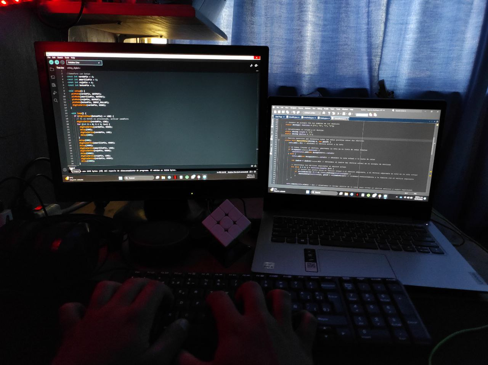

Sobre mi
Formación academica
 Además de mi amor por la música, también tengo una sólida formación en programación y administración de empresas. He adquirido conocimientos en lenguajes de programación como Python y Java, así como en el desarrollo de aplicaciones y la gestión de bases de datos. También he estudiado y comprendido los fundamentos de la administración de empresas, incluyendo la planificación estratégica, el análisis financiero y la gestión de proyectos.
Experiencia musical
Soy un apasionado de la música y he desarrollado habilidades en varios instrumentos, incluyendo la guitarra, el ukulele, el bajo, el piano, la melódica y las percusiones. A lo largo de los años, he tenido la oportunidad de explorar diferentes géneros musicales y participar en diversas colaboraciones y proyectos musicales.
Formación en psicología y neurodivergencias
Además de mi pasión por la música, también tengo un profundo interés en la psicología, con un enfoque especializado en neurodivergencias, como el autismo. He estudiado y ampliado mi conocimiento sobre estas temáticas, lo que me ha permitido desarrollar una comprensión profunda de las experiencias y necesidades de las personas neurodivergentes.
Misiones y aspiraciones
Mi objetivo es combinar mis conocimientos y habilidades en la música, la psicología, la programación y las neurodivergencias para contribuir a la sociedad de manera significativa. Aspiro a crear espacios inclusivos donde las personas puedan explorar su creatividad musical, encontrar apoyo emocional y beneficiarse de soluciones tecnológicas innovadoras. Deseo seguir aprendiendo, creciendo y colaborando con otros profesionales para hacer una diferencia positiva en las vidas de las personas neurodivergentes a través de la música, la psicología y la programación. Busco utilizar mi experiencia en programación para desarrollar aplicaciones y herramientas digitales que faciliten el acceso a la música, promuevan la interacción y potencien las habilidades y el bienestar de las personas neurodivergentes.